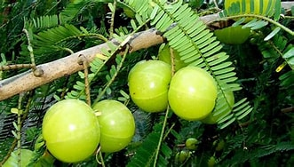

Basonym of Drug
Amalaki
Main Synonym
- Vayasya
- Vrishya
- Jatiphalarasa
- Shiva
- Dhatriphala
- Shriphala
- Amrutaphala
- Tishyaphala
Regional Name
- Hindi: Aavala
- Bengali: Amla, amaro
- Gujarati: Amala
- Telugu: Usirikaya
- Kannada: Nelli, nellikai
- Tamil: Nellimar, nellikay
Botanical Name
Emblica Officinalis, Phyllanthus emblica
Family
Euphorbiaceae
Classification (Gana)
- Acharya Charak: kashghna, jwarghna, virechanopaga, kushthaghna, vayasthapan Ganas include Amalaki
- Acharya Sushruta Samhita: Triphala Gana includes Amalaki
External Morphology
15-20 meter, medium to high tree
Useful Parts
Fruit, leaves (rarely used)
Important Phytoconstituent
Galic acid, elaigic acid, vitamin C
Rasa Panchak
- Rasa: Amla Pradhan, lavan varjita pancharasa
- Guna: Laghu, Ruksha
- Virya: Shita
- Vipaka: Madhur
Action
Tridoshnashak
Therapeutic Indication
- Raktapittahar (bleeding disorders)
- Pramehghna (anti-diabetic)
- Vrushya (aphrodisiac)
- Rasayana (rejuvenating)
- Keshya (good for hair)
Therapeutic Uses
- For diabetes - Amalaki powder with honey.
- For eyes - Juice/ powder with water is useful for eyewash.
- For mouth - Amlaki leaves are useful to treat mouth ulcers.
- For diarrhea - Amalaki leaves with buttermilk are used for diarrhea.
Dose
Powder: 3 to 10 gm
Formulations
- Chyavanprash
- Dhatri-loha
- Amalaki Rasayan
- Triphala
Adverse Effect
Not Known